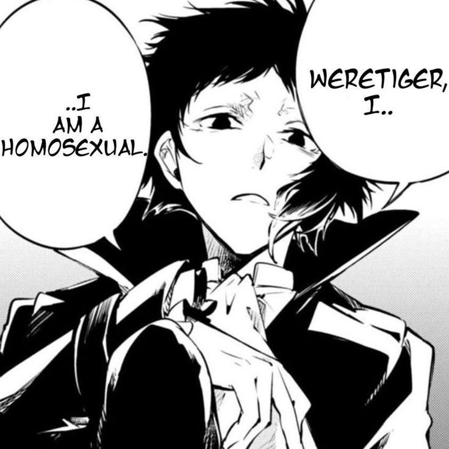

¡Feliz cumpleaños, Kris!
¡Happy birthday Kris!
 Que el cumpleañero nos ilumine
Que el cumpleañero nos ilumine
la vida siempre con su presencia
Felicidades al lÃder de culto
favorito del público
¿Cómo está mi chikis en su dÃa especial?
Como hoy es una ocasión digna de celebrar,
querÃa decirte algunas cositas que usualmente
no tengo la oportunidad de contarte.
Tienes una adicción con cierto personaje
de Bungou Stray Dogs... Y lo encuentro bastante
entrañable, en realidad.
Es lindo verte tan emocionado por algo y a veces
me da ternura ver como utilizas los stickers que te hice
También eres una pequeña bolita de odio, sin embargo
también eres muy amable a tu manera.
Una vez que agarras confianza te conviertes en una de
las personas más divertidas y agradables que tuve la
dicha de conocer.
Jamás voy a olvidar el dÃa en qué te conocÃ, diste una
primera impresión asombrosa, ¡Digna de un super villano!

Eres gay, gay, joto, homosexual, gay-
No lo digo en serio (o tal vez si-) pero
siempre es divertido discutir sobre eso
contigo.
Eres mi lesbiana favorita, amiwito 🫶 JAJAJA
Tal vez estés mirando la pantalla asÃ
después del último punto-
Aunque es probable que tu carita tenga
una expresión más parecida a esta en
este instante...
Sin embargo, eso no importa mucho ahora.
¿Sabes por qué?
TodavÃa tengo una última cosita para
contarte...
¡Ya casi acabo, lo prometo!
Estoy muy agradecido por tu existencia, chikis.
No creo que sea algo que escuches muy seguido
pero si es algo que querÃa recordarte.
Gracias por existir, Kris.
Espero poder decirtelo de nuevo el año siguiente
y el que sigue de ese también, espero algún dÃa
poder comprarte un pastel y estar ahà cuando apagues
tus velitas.
También me gustarÃa algún dÃa poder cantarte las
mañanitas y empujar tu cara al pastel pero mientras
tanto espero que con este detallito baste para ti.
🫶✨
En fin, te deseo un feliz cumpleaños y ojalá te la
pases muy bonito. ¡Arriba los fans de Akutagawa!
Atte.
Tu amiwito que te aprecia mucho, Sam.
PD: Escondà algo en una de las imagenes
de esta página. ¡Buena suerte encontrandolo!~☆
Ya deberÃas de saber que soy un
tramposo de primera-
¿De verdad te sorprende?~ JAJAJA
Dije que estaba oculto en una imagen
pero jamás dije que la imagen iba a ser
visible- Anyway~
Eres mi mejor amigo, chikis.
Espero que nunca llegue el dÃa en que
tengamos que dejar de hablar o jugar juntos.
Puede que no lo diga tan seguido como deberÃa
pero eres una parte muy importante de mi vida, Kris.
Gracias por ser mi amigo, de verdad.
Te quiero mucho, fanático
de los pandas.
PD: Siempre serás mi consentido ٩(◕‿◕｡)۶
PD 2: Invitame a jugar Roblox, extraño jugar
contigo TwT